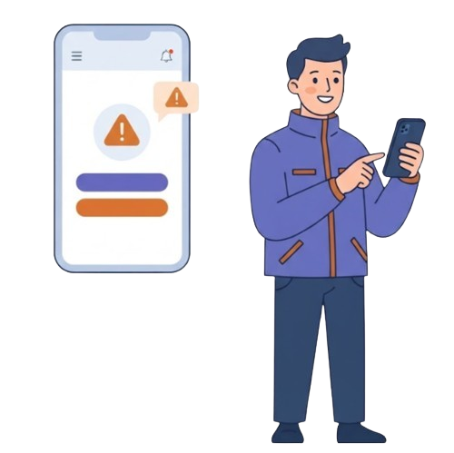

Sistema Integral de Gestión y Respuesta
ante Emergencias
Tu ciudad, siempre preparada.
Desliza para conocer más
SIGRE conecta a ciudadanos, voluntarios y autoridades para construir ciudades más seguras, sostenibles y solidarias ante emergencias urbanas y rurales, como inundaciones o sismos.
Una herramienta pensada para actuar con confianza, solidaridad y rapidez, porque estar preparados hoy es proteger a nuestra comunidad mañana.
SIGRE centraliza la información crítica durante situaciones de emergencia: rutas seguras y más cortas, centros de acopio y albergues, solicitudes de ayuda y reporte de desaparecidos.

SIGRE (Sistema Integral de Gestión y Respuesta ante Emergencias) es una plataforma que integra cinco módulos para ayudar a los ciudadanos y autoridades durante emergencias urbanas y rurales. Consume datos geoespaciales de OpenStreetMap y zonas de riesgo aproximadas de Montería.
Alineado con las metas 11.5 y 11.b del ODS 11, SIGRE busca salvar vidas y construir ciudades más resilientes, inclusivas y seguras.
Encuentran rutas de evacuación cortas y seguras y acceden a la información que necesitan durante una emergencia.
Publican alertas de emergencia y gestionan centros de acopio, inventarios, solicitudes de ayuda y reportes ciudadanos desde un solo panel.
Participan en jornadas comunitarias de apoyo y ayudan a difundir reportes de personas y animales desaparecidos.
Obtén acceso a rutas seguras, centros de acopio y toda la información crítica en un solo lugar.
Crear cuentaEs uno de los 17 Objetivos de Desarrollo Sostenible de las Naciones Unidas: lograr que las ciudades y los asentamientos humanos sean inclusivos, seguros, resilientes y sostenibles.